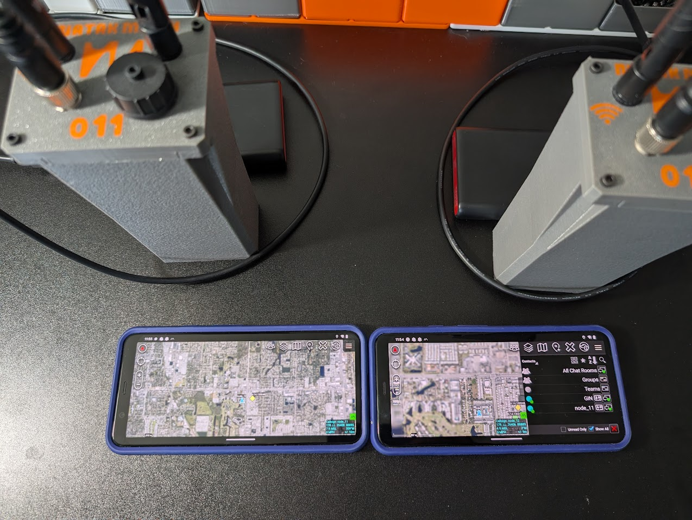
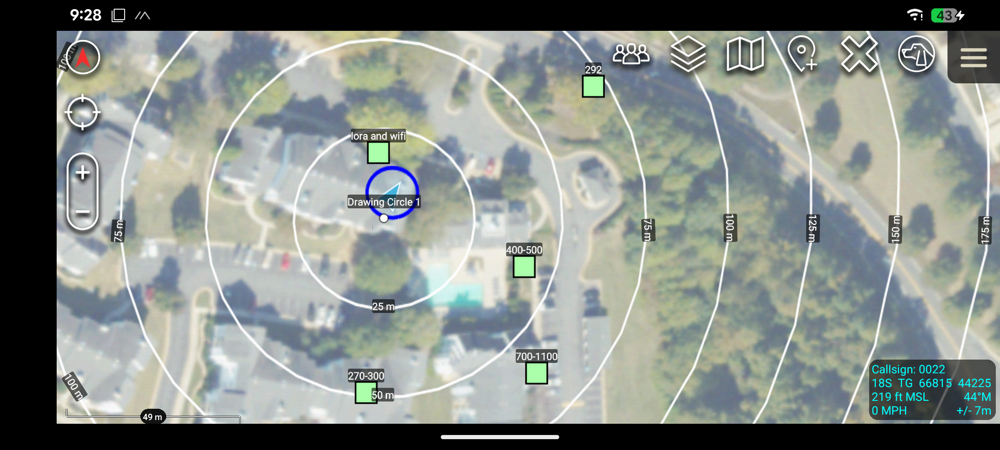
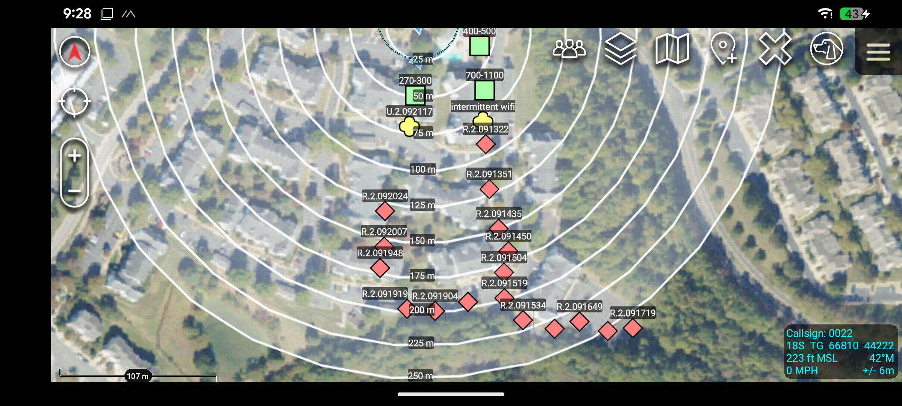
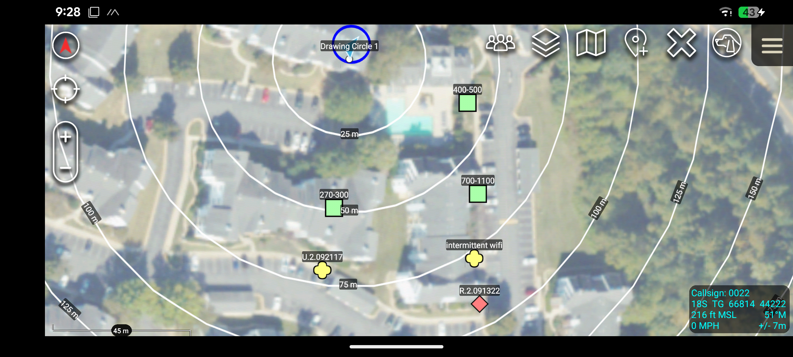
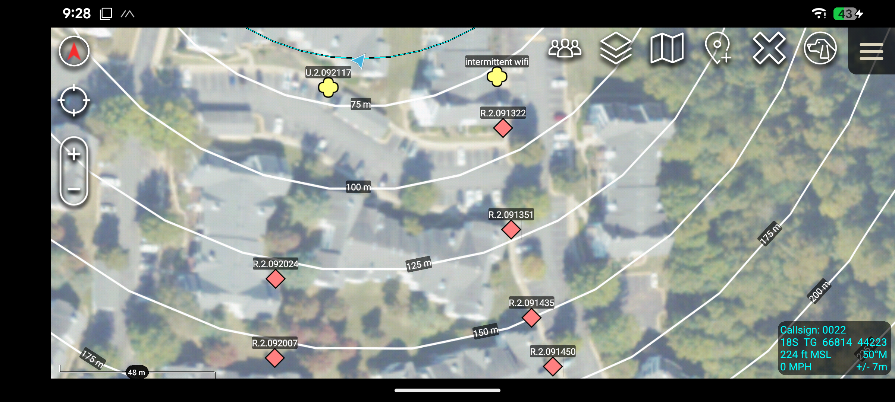
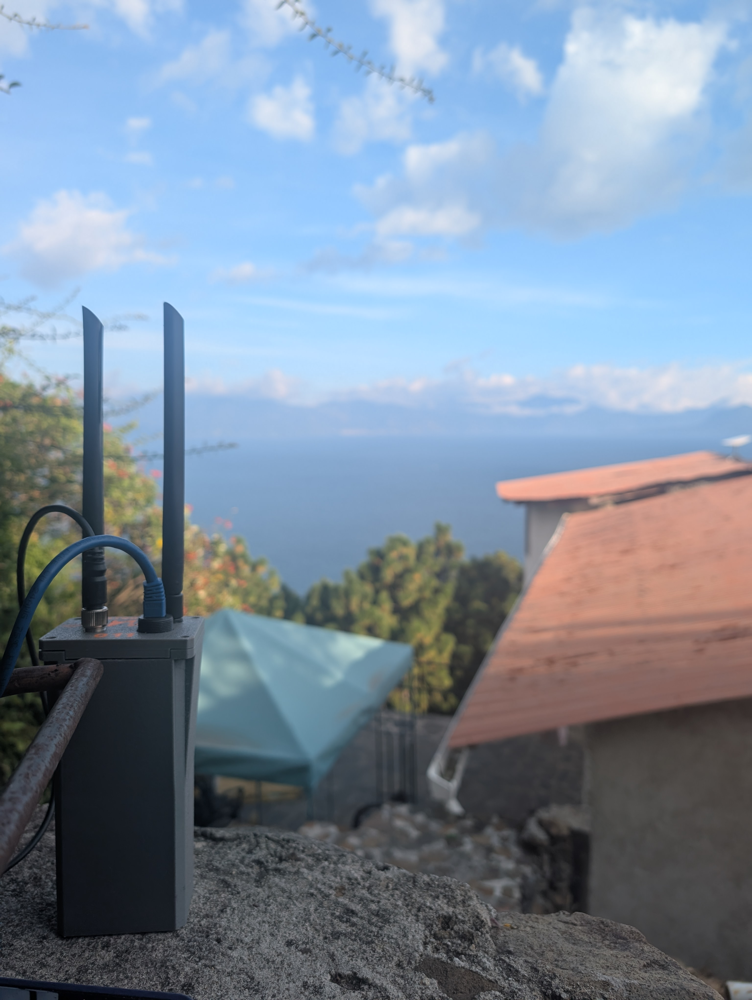
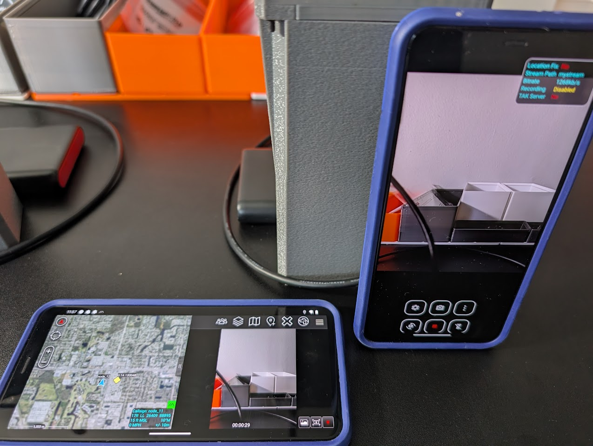
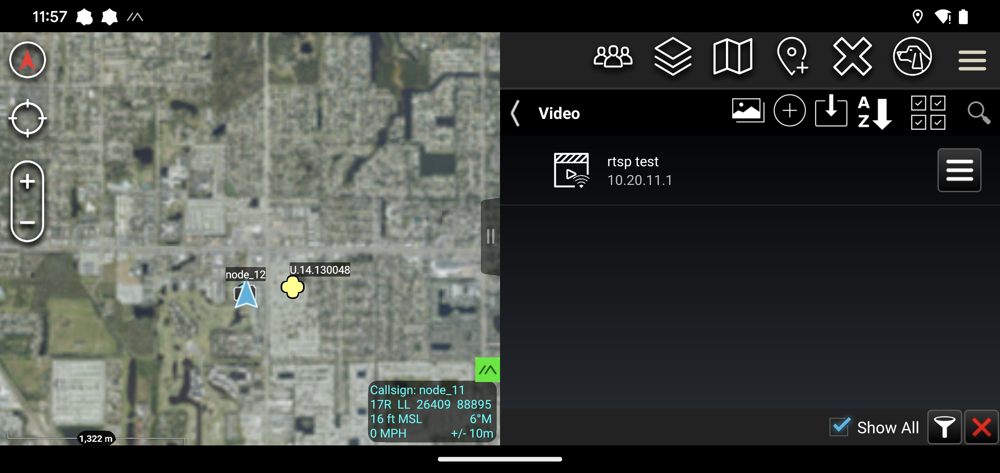
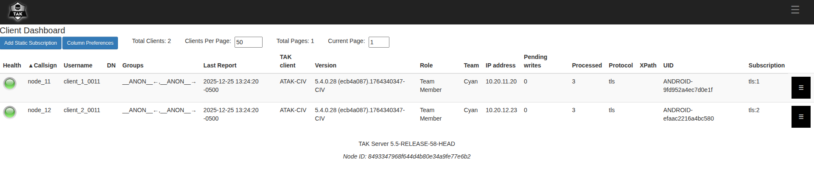
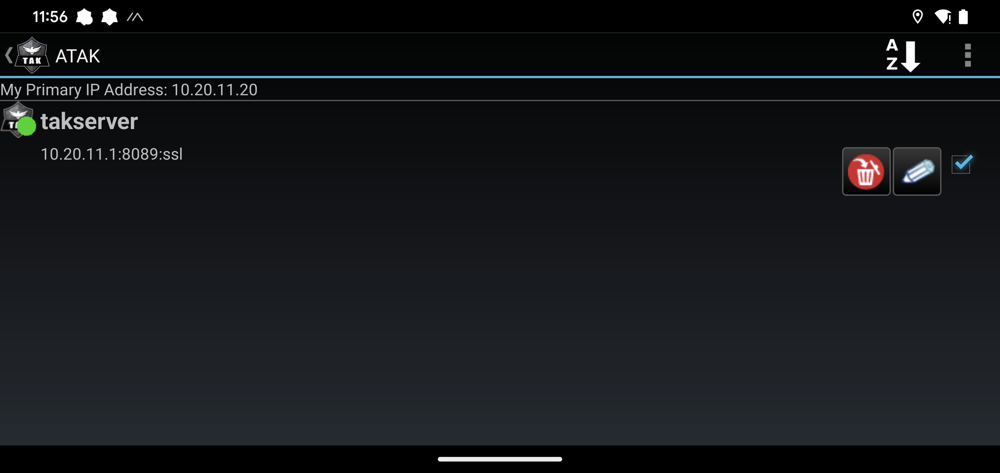

ATAK Operations
Full-speed ATAK over mesh — no infrastructure, no plugins. Connect to the Nucleus WiFi and ATAK works the way it was designed to. SA, chat, pictures, voice, and video at real IP speeds, with LoRa extending your positions miles beyond WiFi range.

Native ATAK Over WiFi Mesh
Connect ATAK devices to the Nucleus WiFi mesh and everything works at full speed — positions, chat, pictures, routes, data packages, and voice. ATAK auto-discovers other devices on the mesh via standard multicast. No TAKserver required for basic operations, no plugins to install, no configuration on the phone beyond connecting to the WiFi access point.
The WiFi mesh runs at ~30 Mbps close range and 1-5 Mbps at distance, which means ATAK operates the way it was designed to — not throttled through a LoRa bottleneck. File transfers, picture sharing, and data packages move at real speed.
- ATAK works natively over the WiFi mesh — positions, chat, pictures, voice at full speed
- Auto-discovery via multicast — no TAKserver needed for basic position sharing
- 802.11s mesh with WPA3 encryption, self-healing topology
- ~30 Mbps close range, 1-5 Mbps out to 1-3 miles with elevation and LoS




Extended Range SA via LoRa CoT Bridge
The Nucleus includes a built-in CoT bridge that transparently forwards ATAK positions and chat messages over the onboard Meshtastic LoRa radio. When your ATAK device sends a position update on the local network, the Nucleus intercepts it and pushes it out as CoT packets over LoRa. Remote Nucleus nodes receive it and inject it back into their local network as native multicast — your position shows up on distant ATAK screens automatically.
Zero configuration on the phone. No ATAK plugin needed. The bridge handles compression, rate limiting, and loop prevention transparently. Tested to 8+ miles with line of sight on the LoRa link.
- Transparent position + chat bridging over Meshtastic LoRa — no phone plugin needed
- Rate-limited (30s per UID) and loop-protected for clean operation
- LoRa tested to 8+ miles with line of sight
- Toggle between CoT Bridge mode and BLE mode (Meshtastic phone app) via web UI
- Two layers: high-speed WiFi mesh + long-range LoRa for positions and chat

ATAK Voice Over Mesh
The ATAK voice plugin works natively across the WiFi mesh. Voice traffic, contact discovery, and channel selection are all routed between nodes via multicast. Multi-hop voice forwarding is handled by 802.11s at Layer 2 with built-in deduplication.
No additional server or configuration required — if you're on the mesh, voice works. Multiple channels supported for team separation.
- ATAK voice plugin routes voice across the mesh network
- Contact discovery and multi-channel support over multicast
- Voice hops through intermediate nodes to extend range
- No additional infrastructure beyond the mesh itself

Video Streaming Over WiFi Mesh
The WiFi mesh has enough bandwidth to carry live video from multiple sources — EUDs running OpenTAK ICU, IP cameras, or drone feeds. Any video source on the mesh network can stream to connected devices.
When OpenTAKServer is running on a node, it distributes video feeds to all ATAK clients on the mesh automatically. Any ATAK client connected to any node can view the stream. No cloud, no internet, no external servers required.
- Stream video from EUDs, IP cameras, or drones over the mesh
- WiFi mesh bandwidth supports real-time video from multiple sources
- OpenTAKServer distributes feeds to all ATAK clients when installed
- No cloud or internet dependency


Portable OpenTAKServer
Add OpenTAKServer to your mesh and the whole network gets a portable, battery-powered TAK server — centralized SA, data packages, mission planning, and video distribution that travels with the team. No data backhaul to a central server, no cloud, no external infrastructure.
Any ATAK client connected to any node on the mesh gets persistent situational awareness, automatic data package distribution, and video feeds. The server lives on the mesh itself — wherever the mesh goes, the server goes.
- Centralized SA, data packages, mission planning, video distribution
- Portable and battery powered — travels with the mesh
- No data backhaul or external infrastructure required
- Video feed distribution to all connected ATAK clients


Ready to Build Your Network?
Get started with Nucleus mesh nodes. Contact us for pricing and availability.